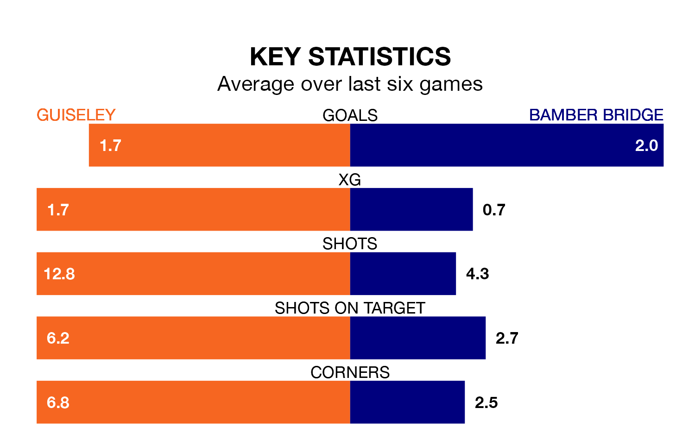

Bamber Bridge face Guiseley on Saturday seeking to protect their long unbeaten run in Northern Premier League.
Bamber Bridge are unbeaten in five, with three wins and two draws, ahead of the 3pm kick-off.
They face a Guiseley team who have won two and drawn one over the same number of games.
With 43 goals in 24 games so far this season, Guiseley are scoring more than average in the league with 1.8 goals per game. And they are conceding at an average rate, letting in 38 goals at a rate of 1.6 per game.
Bamber Bridge are also above average scorers, with 1.7 goals per game, compared to a league average of 1.6. They have conceded 1.6 goals per game.
The Lions are ninth in the table after 24 games, of which they have won 11 and drawn six, earning 39 points.
The away team are five places behind the hosts in 14th, with seven wins and 11 draws putting them on 32 points.
Guiseley's last match was on January 6, a 1-0 loss against Gainsborough Trinity.
Bamber Bridge drew 2-2 with Workington last time out, on January 1.
Updated: 11:29, 08/01/24